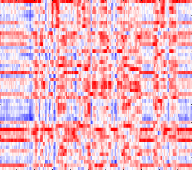

Select Curated Evaluation Sample
Ground Truth: Bonafide
Phonemic Attribution
Identifies which phonemes in which segments triggered the prediction
Attack Description
Black-box detectors can fail under domain shift. Grounding attribution to phonetic segments guarantees verifiable forensic evidence.
Deployed Models & Architectures
Underlying peer-reviewed frameworks powering the detection and attribution backbones
Phoneme Posteriorgrams (PPGs)
To capture deeper phoneme-level cues, this work introduces a phonetic-driven framework for synthetic speech detection (SSD). Phoneme posteriorgrams (PPGs) and their fused representations are extracted and modeled using a residual convolutional neural network (CNN) capable of learning discriminative spectro-temporal patterns. To mitigate redundancy, a phoneme-importance analysis is proposed to identify and prune less informative phonemes, enhancing computational efficiency and model interpretability. Evaluated on the ASVspoof 2019 logical access (LA) benchmark, the approach shows that pruning over half of the phonemes not only preserves but slightly improves the equal error rate (EER). Furthermore, combining the pruned cepstral features with raw waveform representations achieves competitive performance against state-of-the-art methods, demonstrating the efficacy of phoneme-selective modeling for robust anti-spoofing.
LARs + CSN
Log Area Ratios (LAR), which represent vocal tract shape, have received little attention in synthetic speech detection. In this paper, we explore LAR features for synthetic speech detection and show that speaker normalization enhances synthetic speech detection performance. Specifically, we propose a Conditional Speaker Normalization (CSN) method that normalizes the feature space using speaker-verification or speaker-height embeddings. Results on the FoR dataset demonstrate that our proposed CSN improves EER by 42.23% relative over unnormalized features. Furthermore, evaluation on the ASVspoof 2019 LA dataset shows that LARs, while performing reasonably well alone, significantly improve generalization when fused with other features, yielding a 26.6% relative EER reduction. Finally, phoneme-level interpretability analysis reveals that speaker normalization increases the contribution of vowels in synthetic speech detection.